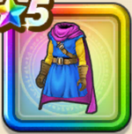

アリアハンの服上
攻略班 6.5点 / ヒャド属性耐性+3%バラモスへの耐性+2%ドラゴン系への耐性+1%ゾーマへの耐性+2%スライム系への耐性+3％怯え耐性+2%メラ属性斬撃・体技ダメージ+1%
くわしい特徴
【レベル別習得スキル】 Lv1ヒャド属性耐性+3% Lv5バラモスへの耐性+2% Lv8ドラゴン系への耐性+1% Lv10さいだいHP+3 Lv12ゾーマへの耐性+2% Lv15メラ属性斬撃・体技ダメージ+1% Lv18スライム系への耐性+3％ Lv23怯え耐性+2% Lv25守備力+4 【限界突破スキル】 1凸防御減耐性+3% 2凸きようさ+2 3凸さいだいHP+5 4凸守備力+8